← → o click para avanzar

Estud-IA · Ruta TI · 2026-2 · Sesión 2 · clase virtual
La caja de herramientas: monta tu taller completo
Nadie construye una casa sin herramientas. Hoy conseguimos TODAS — tuyas, gratis, para siempre.
Alejandro Barrera · Cloud Architect

El mapa del curso · ¿en qué fase estás?
Construimos una casa. Tu empresa vivirá en ella — y hoy vamos por los cimientos.
🏡 La casa habitada — la web de tu empresa en internet
💧Los servicios públicosCLOUD · AWS
🚪Puertas y cerradurasCIBERSEGURIDAD
🧱La estructuraSERVIDORES
🗺La dirección y las callesREDES · NETWORKING
📐Los planosGIT · GITHUB◄ AQUÍ ESTAMOS
🏗Los cimientosLINUX + TERMINAL
El plan de hoy
Primero las herramientas. Después, el cemento.
- Parte 1 · La caja de herramientasGitHub · Git · VS Code · AWS · Terraform — instaladas y verificadas en TU máquinaprimera mitad
- Parte 2 · Estrenarlas: Linux y la terminalLos primeros comandos + el rito de paso: tu primer pushsegunda mitad
Todo con cuentas y herramientas personales de cada uno. Nada depende de la universidad — el taller es tuyo y te lo llevas del curso.
La gráfica de la similitud · obra ↔ software
Toda obra necesita su caja de herramientas
HERRAMIENTA 1 de 5 GitHub
📋La oficina de planos: todo lo que construyas queda archivado, con fecha y firma, visible para quien quieras.
Tu cuenta y tu bitácora
- 1 · github.com → Sign up → correo personal + usuario profesional (te acompañará toda la carrera)
- 2 · Nuevo repositorio: bitacora-[tu-empresa] · público · ✓ Add README
Checkpoint: link de tu repo al chat ✅ — el que ya la tiene de la misión, va adelante y ayuda.
HERRAMIENTA 2 de 5 Git
📐El archivo del arquitecto: anota cada cambio de la obra — y de regalo te entrega la terminal donde trabajarás.
Instálalo — y gana tu terminal
- 🪟 Windows: git-scm.com/download/win → instalar TODO por defecto → te queda Git Bash (tu terminal)
- 🍎 macOS: Terminal (⌘+espacio → "Terminal") → git --version → aceptar si ofrece instalar herramientas
- ✅ Verificación en ambos: git --version responde un número
Checkpoint: pega tu versión al chat ✅
HERRAMIENTA 3 de 5 VS Code
✏️La mesa de dibujo: donde redactarás planos (código y configuraciones) todo el semestre.
El editor del planeta entero
- 1 · code.visualstudio.com → Download → instalar por defecto
- 2 · Ábrelo, verifica que abre — y déjalo quieto: hoy la protagonista es la terminal
Checkpoint: ✅ al chat · Mientras descarga: ayuda al del lado — nadie se queda atrás.
HERRAMIENTA 4 de 5 AWS
🏞El terreno: el lote (capa gratuita) donde construiremos la casa de tu empresa a partir de la semana 4.
Tu cuenta personal en la nube
- 1 · aws.amazon.com/free → Create a Free Account → tu correo personal
- 2 · Pide tarjeta débito/crédito (validación de ~USD 1 que se REVERSA — no es un cobro) + celular para el código
- 3 · Plan Basic (gratuito) · región: N. Virginia (us-east-1)
- 🔐 La clave de esta cuenta (root) es SAGRADA: larga, guardada, jamás compartida — ampliamos en el minuto de seguridad
¿Sin tarjeta a la mano? Sin drama: queda de misión con el paso a paso — hoy nada más la necesita.
HERRAMIENTA 5 de 5 Terraform
🤖La constructora automática: le entregas los planos y construye la casa completa, idéntica, en minutos. La estrella del módulo 2.
Instálala desde tu terminal nueva
# Windows (PowerShell): winget install HashiCorp.Terraform
# macOS (Terminal): brew install hashicorp/tap/terraform
# (sin brew: descargar de developer.hashicorp.com/terraform/install)
$ terraform -version # ✅ debe responder un número
Checkpoint: pega tu versión ✅ · Si algo pelea con el antivirus o los permisos: de misión con la guía — no nos bloqueamos.
Cierre de la parte 1
Tu taller quedó montado
- GitHub — la oficina de planos, con tu bitácora creada
- Git — el archivo del arquitecto (+ tu terminal)
- VS Code — la mesa de dibujo
- AWS — el terreno (o de misión, con el paso a paso)
- Terraform — la constructora automática
Herramientas de nivel profesional, costo total: $0. Ahora sí — a mezclar cemento. 🧱
Parte 2 · el cemento y la pala
¿Por qué la terminal, si existen las ventanitas?
- Los servidores no tienen pantalla ni mouseEl 100% de la operación real del mundo pasa por terminalrealidad
- Los clicks no dejan planosLo que escribes se puede guardar, repetir y automatizar — lo que clickeas, noplanos
- Es el idioma de la IALos agentes de IA que ya operan infraestructura… lo hacen por terminal2026
LAB 1 Ubicarse — Git Bash (Win) o Terminal (Mac)
¿Dónde estoy? ¿Qué hay aquí?
$ pwd # ¿en qué carpeta estoy?
$ ls # ¿qué hay aquí?
$ ls -la # …¿y lo escondido, con detalles?
$ cd Desktop && pwd # moverse
$ cd ~ # volver a casa
$ clear # limpiar
Mini-reto al chat: ¿qué te respondió pwd?
LAB 2 Construir
Las primeras piezas, en tu propia máquina
$ mkdir curso && cd curso
$ echo "Somos [tu empresa]" > lema.txt
$ cat lema.txt
$ cp lema.txt lema-v2.txt # copiar
$ mv lema-v2.txt slogan.txt # renombrar
$ rm slogan.txt # borrar — SIN papelera ⚠️
rm no perdona. Respirar, leer dos veces, y solo entonces borrar.
LAB 3 Conectar el taller con la oficina
git config + traer tus planos
$ git config --global user.name "Tu Nombre"
$ git config --global user.email "tu@correo.com" # el MISMO de GitHub
$ git clone https://github.com/TU-USUARIO/bitacora-tu-empresa.git
→ se abre el navegador: Authorize (una sola vez)
$ cd bitacora-* && ls -la # el README… y la carpeta .git 👀
La carpeta oculta .git ES el archivo del arquitecto — por eso Git solo ve lo que pasa dentro de esta carpeta.
EL RITO DE PASO tu primer push
De tu máquina al mundo — en 3 comandos
$ mkdir planos materiales && echo "Somos [empresa]" > materiales/lema.txt
$ git add . # "arquitecto: mira esto"
$ git commit -m "Primeras piezas de la casa" # "fírmalo en el plano"
$ git push # "archívalo en la oficina"
- Abran github.com/[usuario]/bitacora-[empresa]… ahí están sus carpetas, publicadas
Editar local → push al mundo: el flujo de los equipos de tecnología del planeta. Ya son parte. 📐
RETO La búsqueda del tesoro
Hay un tesoro escondido en tu terminal
- 1 · Copia el comando del chat y ejecútalo (crea el mapa en tu máquina)
- 2 · Navega SOLO con la terminal: cd, ls, cat
- 3 · El código del cofre → al chat 🏴☠️ · y súbelo: tesoro.md en tu bitácora con add · commit · push
Primeros 3: gloria eterna. Pista: en esta casa también hay cosas ocultas.
PARA CASA tu Linux completo
Ubuntu de verdad, dentro de tu máquina
- 🪟 Windows: PowerShell como administrador → wsl --install → reiniciar → abrir "Ubuntu" → usuario y clave
- 🍎 macOS: ya eres familia Unix — tu Terminal es el equivalente
- 🌐 Probar Linux YA sin instalar: killercoda.com → Playgrounds → Ubuntu (terminal pura a pantalla completa, gratis con tu cuenta GitHub)
La próxima semana administramos ese Ubuntu por dentro: usuarios, permisos, procesos.
🔐 Minuto de seguridad #1 · nueva tradición
Dos llaves que cuidan tu casa
- La clave ROOT de AWSPuede TODO: gastar, borrar, regalar el terreno. Larga, guardada en un gestor, JAMÁS compartida — ni "un momentico"01
- Un repo público es una casa con ventanasJamás subir contraseñas, llaves, tokens ni datos personales — hay bots escaneando GitHub 24/702
- En la duda, no lo subasDespublicar no existe de verdad03
El producto de hoy
Tu cheat-sheet, subida como los profesionales
- 1 · history — todo lo que aprendiste hoy está ahí
- 2 · cheatsheet-terminal.md en tu bitácora: 12-15 comandos con TUS palabras
- 3 · git add . && git commit -m "Mi cheat-sheet" && git push
- 4 · Link al chat ✅
Para la próxima clase
Su misión
- 1 · Cheat-sheet subida (con push) + lo que quedó pendiente del taller (AWS / Terraform / WSL)
- 2 · Pantallazo del prompt de Ubuntu (WSL) o de Killercoda a la bitácora
- 3 · Próxima clase presencial: la dirección y las calles de la casa — redes. Laptop los que puedan
Hoy montaron un taller profesional completo por $0. La casa ya tiene con qué. 🧰